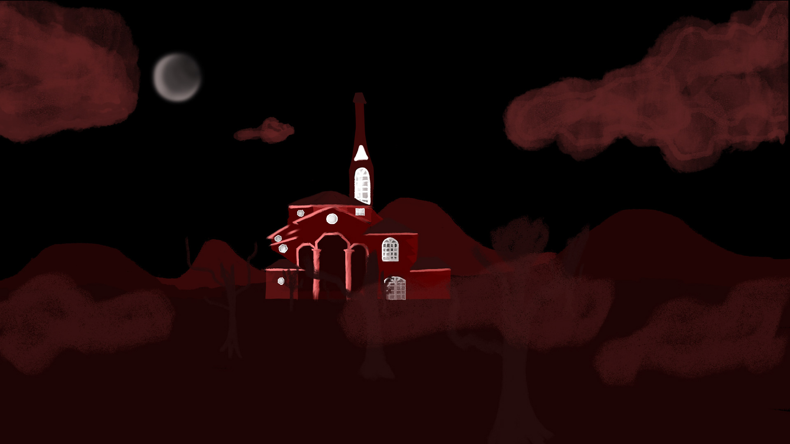
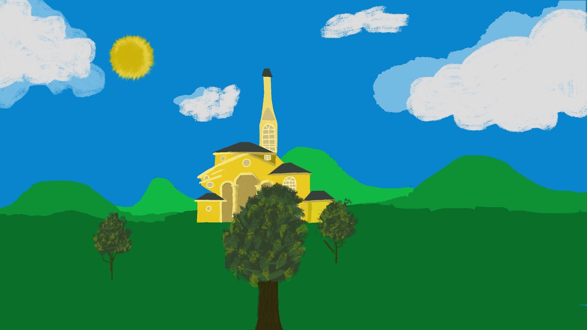
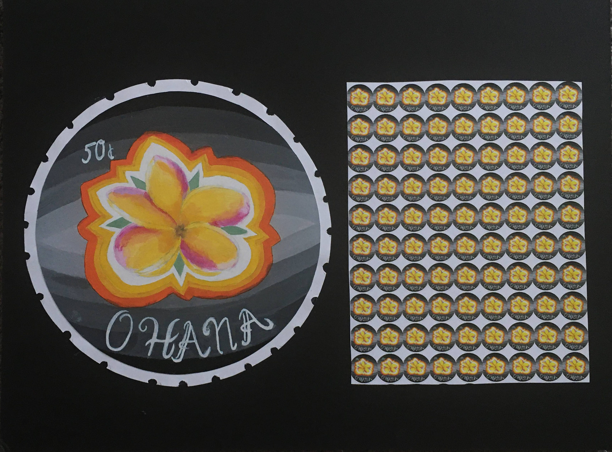

Ige Kinyomi
Profile
I am a driven creative with a diverse style and various interests.
Being an art major in the BA program and minoring in DMART (Digital Media Art) I have learned a plethora of skills.
I can illustrate, animate, do graphic design, and much more.
It is important that every artist learns and demonstrates various forms of media.
I am an excellent communicator and seek to contribute my knowledge and skills in a studio (similar to Pixar or Laika) that offers growth and development opportunities.
By having numerous skills, I am then able to perform any task needed.
Scroll for more!
Experience
CIRCULATION STUDENT ASSISTANT
LSU LIBRARIES: ACCESS SERVICES| 2022-PRESENT
- Helped patrons search and retrieve items
- Completed Book Delivery
- Performs book shelving, etc
QA TESTER
ELECTRONIC ARTS(EA) | JUN 2022 - AUG 2022
- Debugged games to improve functionality for users.
- Debugging included: playtesting, observing, and paying close attention to details.
PUBLIC RELATIONS CHAIR
KAPPA BETA GAMMA (BETA ETA) | APR 2021 - APR 2022
- Managed social media account & created social media for sorority chapter
- Updated, posted, and publicized all events on social media.
- Acknowledged all active members achievements (awards,
engagements, etc.) holding, maintaining, and updating all social media
DISNEY DREAMERS ACADEMY | MAR 2017 - MAR 2017
- Four day high school program with Walt Disney World, Steve Harvey and Essence
Magazine. networked with celebrities, learned how to be successful, and went behind
the scenes at Disney and worked with Disney graphic team Yellow Shoes to create
ads, learn the components of a product, and create brochures.
Education
- BACHELOR OF ARTS, MAJOR : ART MINOR:DMART
LOUISIANA STATE UNIVERSITY | DEC 2023
- SAVANNAH COLLEGE OF ART & DESIGN | SEPT 2017 - MAY
2018
Some of my work
Most Recent


Older

Skills
- Teamwork/team player
- Communication
- Time Management
- Independant
- Dependable
- Highly Organized
Portfolio
View more of my work!
Ige Kinyomi Portfolio
Contact Information
Email
i.kinyomi@gmail.com
Phone
225-301-2028
Follow me on Facebook!
Facebook
Back to the Top
Go to top
More about me
Link to about page